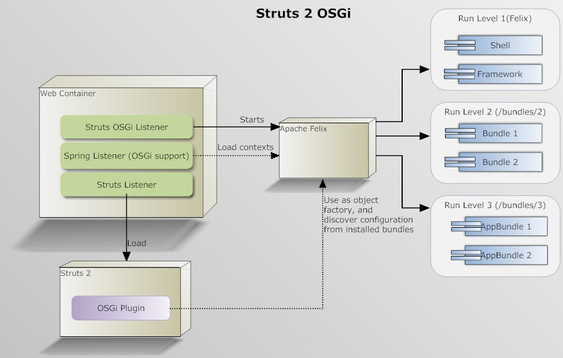

Overview
| This plugin is only experimental and can change in the future. |
This plugin provides support for starting an instance of Apache Felix inside a web application, and scanning installed bundles for Struts configuration. An admin bundle is also provided.
Features
- GUI for bundle administration
- Web access to Felix Shell
- Application packages can be divided into bundles
- Supports Velocity and FreeMarker templates
- Supports Struts Spring integration
- Supports integration with the Convention plugin
Missing Features
- Probably can't access application classes from bundles, including Spring classes
- constant declarations in the bundled XML config files are ignored, these constants need to be set in the application XML config files (struts.xml)
About Run levels
There are two ways of organizing bundles. If third party bundles will not be used, then the application bundles can just be placed under /WEB-INF/classes/bundles. Bundles in this dir will be started in run level 2, the Apache Felix framework's bundles will be loaded in run level 1. If third parties bundles will be used, or you need to start bundles on different run level, create sub dirs under /WEB-INF/classes/bundles with numeric names (starting from "2" because "1" is reserved for Felix), which correspond to the run level number. For example bundles under /WEB-INF/classes/bundles/2 will be started in run level 2, and bundles under /WEB-INF/classes/bundles/3 will be started in run level 3.
Simple Usage
Add these lines to MANIFEST.MF:
Struts2-Enabled: true Export-Package: com.mycompany.myapp.actions Bundle-Version: 1.0.0 Bundle-SymbolicName: foo.actions Import-Package: com.opensymphony.xwork2
Now the jar is ready to be deployed. Drop the jar into the /WEB-INF/classes/bundles directory and it will automatically be installed when the application starts up.
Using Spring
By default Spring OSGi loads its xml config files asynchronously, which causes the OSGi plugin to fail while starting. To fix this add this line to MANIFEST.MF:
Spring-Context:*;create-asynchronously:=false Or if using The Apache Felix maven plugin (see below for details): <Spring-Context>*;create-asynchronously:=false</Spring-Context> |
| Please note that you do not need to have the Struts Spring plugin in your application, in order to use Spring with the OSGi plugin. |
If you want to use the Spring as the object factory for your actions, then follow these steps:
- Place your Spring xml files under /META-INF/spring in the bundle jar file
- Place your Spring xml files under /spring (they must be in the classpath, if you are using maven, put thme under /src/resources/spring) in the application
- Copy all the bundle jar files into /WEB-INF/classes/bundles in your application
- Make sure that the following properties are set in struts.xml or struts.properties in your application:
<constant name="struts.objectFactory" value="osgi" /> <constant name="struts.objectFactory.delegate" value="springOsgi" />
- Configure your web.xml like:
<?xml version="1.0" encoding="UTF-8"?> <web-app id="WebApp_9" version="2.4" xmlns="http://java.sun.com/xml/ns/j2ee" xmlns:xsi="http://www.w3.org/2001/XMLSchema-instance" xsi:schemaLocation="http://java.sun.com/xml/ns/j2ee http://java.sun.com/xml/ns/j2ee/web-app_2_4.xsd"> <display-name>Struts Blank</display-name> <filter> <filter-name>struts2-prepare</filter-name> <filter-class>org.apache.struts2.dispatcher.ng.filter.StrutsPrepareFilter</filter-class> </filter> <filter> <filter-name>struts2-execute</filter-name> <filter-class>org.apache.struts2.dispatcher.ng.filter.StrutsExecuteFilter</filter-class> </filter> <filter-mapping> <filter-name>struts2-prepare</filter-name> <url-pattern>/*</url-pattern> </filter-mapping> <filter-mapping> <filter-name>struts2-execute</filter-name> <url-pattern>/*</url-pattern> </filter-mapping> <listener> <listener-class>org.apache.struts2.osgi.StrutsOsgiListener</listener-class> </listener> <listener> <listener-class>org.apache.struts2.dispatcher.ng.listener.StrutsListener</listener-class> </listener> <listener> <listener-class>org.springframework.web.context.ContextLoaderListener</listener-class> </listener> <context-param> <param-name>contextClass</param-name> <param-value>org.springframework.osgi.web.context.support.OsgiBundleXmlWebApplicationContext</param-value> </context-param> <context-param> <param-name>contextConfigLocation</param-name> <param-value>osgibundle:/META-INF/spring/*.xml</param-value> </context-param> <context-param> <param-name>parentContextKey</param-name> <param-value>parent-context-bean</param-value> </context-param> </web-app>
- Add the Spring OSGi, and Spring Web dependencies to your web app, if you are using maven:
<dependency> <groupId>org.springframework</groupId> <artifactId>spring-web</artifactId> <version>2.5.5</version> </dependency> <dependency> <groupId>org.springframework.osgi</groupId> <artifactId>spring-osgi-web</artifactId> <version>1.1.2</version> </dependency>
- Download Spring OSGi and copy all the required bundles under /classes/bundles/2. For Struts OSGi 1.1.2, these are the required bundles:
com.springsource.org.aopalliance-1.0.0.jar com.springsource.org.apache.commons.logging-1.1.1.jar org.springframework.aop-2.5.5.A.jar org.springframework.beans-2.5.5.A.jar org.springframework.context-2.5.5.A.jar org.springframework.core-2.5.5.A.jar org.springframework.osgi.core-1.1.2.A.jar org.springframework.osgi.extender-1.1.2.A.jar org.springframework.osgi.io-1.1.2.A.jar org.springframework.osgi.web-1.1.2.A.jar org.springframework.web-2.5.5.A.jar
- Put your bundles under /classes/bundles/3
Using Velocity
If you are going to use Velocity results, then add Velocity and Common Digester jars to your application. Using maven:
<dependency> <groupId>velocity</groupId> <artifactId>velocity</artifactId> <version>1.5</version> </dependency> <dependency> <groupId>velocity-tools</groupId> <artifactId>velocity-tools</artifactId> <version>1.3</version> </dependency> <dependency> <groupId>commons-digester</groupId> <artifactId>commons-digester</artifactId> <version>1.8</version> </dependency>
Using The Convention Plugin
The Convention plugin will discover actions in bundles in the same way that it discovers them in normal applications. The Convention plugin expects result templates to be (by default) stored under /WEB-INF/content. When packaging actions inside bundles, there won't be a WEB-INF folder, so you must let Convention know where the templates are located. There are two ways of doing so(assuming the templates are under /content):
1. Set the templates location constant in struts.xml (in the application struts.xml, not a bundled struts.xml)
<constant name="struts.convention.result.path" value="/content/"/>
2. Using the ResultPath annotation
@ResultPath("/content") public class HelloWorldAction extends ActionSupport ... }
The OSGi interceptor
The OSGi plugins defines the osgi interceptor and osgiStack(defaultStack plus the osgi interceptor) in the package osgi-default. This interceptor will check the action and if it implements org.apache.struts2.osgi.interceptor.BundleContextAware, it will invoke setBundleContext(BundleContext bundleContext) on the action, passing the BundleContext of the OSGi container. The interceptor also checks if the class implements org.apache.struts2.osgi.interceptor.ServiceAware<T>, if it does, setServices(List<T> services) will be called, where T is the type of a service published in the OSGi container. For example, lets assume an installed bundle publishes a service with the interface BookPriceLookup, to get all the instances of this service, an action would look like:
public class BookPriceAction extends ActionSupport implements ServiceAware<BookPriceLookup> { private List<BookPriceLookup> services; public void setServices(List<BookPriceLookup> services) { this.services = services; } }
Keep in mind that the interceptor is not defined in the default struts package, so when using Convention, you need to specify the parent package as "osgi-default", either using annotations (@ParentPackage), or XML(this XML fragment must be in the struts XML config file in the application, not the bundle's, this is a current limitation of the OSGi plugin):
<constant name="struts.convention.default.parent.package" value="osgi-default" />
|
Admin bundle
An admin bundle is distributed with struts, which provides a simple interface to list the installed bundles. Using this interface the bundles can be stopped, started and updated (reloaded from the file system). This interface also provides information on the installed bundles, like OSGi metadata, and a list of packages and actions loaded from each bundle. An interactive AJAX shell is also available, which is just a web interface to the Apache Felix Shell. To use this bundle, just copy the jar file to /bundles (same place where the application bundles are installed) and open http://localhost:PORT/CONTEXT/osgi/admin/ (replace PORT and context)
About stopping/starting bundles
When a bundle is started, the OSGi plugin will check for the header Struts2-Enabled in it. If it is set to "true", the bundle will be scanned for XML config and Convention config. When a bundle is stopped, any actions that were loaded from it will be removed from the runtime configuration.
Settings
The following settings can be customized. See the developer guide.
| Setting | Description | Default | Possible Values |
|---|---|---|---|
| struts.objectFactory.delegate | The alias of the ObjectFactory to wrap | struts | Any configured alias |
The following setting must be set as context parameters in web.xml, because they are used by the StrutsOsgiListener, for example:
<context-param> <param-name>struts.osgi.clearBundleCache</param-name> <param-value>false</param-value> </context-param>
| Setting | Description | Default | Possible Values |
|---|---|---|---|
| struts.osgi.clearBundleCache | Delete all installed bundles when the container starts | true | true or false |
| struts.osgi.runLevel | Run level to start the container | 3 | >=3 |
| struts.osgi.logLevel | Log level for Apache Felix | 1 (Error) | 1 = error, 2 = warning, 3 = information, and 4 = debug |
Building bundles with Maven
Jar files can be turned into bundles using the Maven Bundle Plugin like:
<build> <plugins> <plugin> <groupId>org.apache.felix</groupId> <artifactId>maven-bundle-plugin</artifactId> <extensions>true</extensions> <version>2.0.0</version> <configuration> <instructions> <manifestLocation>META-INF</manifestLocation> <Struts2-Enabled>true</Struts2-Enabled> <Export-Package>org.apache.struts2.osgi.demo</Export-Package> <Import-Package>*,com.opensymphony.xwork2</Import-Package> <Spring-Context>*;create-asynchronously:=false</Spring-Context> </instructions> </configuration> </plugin> </plugins> </build>
Struts OSGi + Spring OSGi diagram
